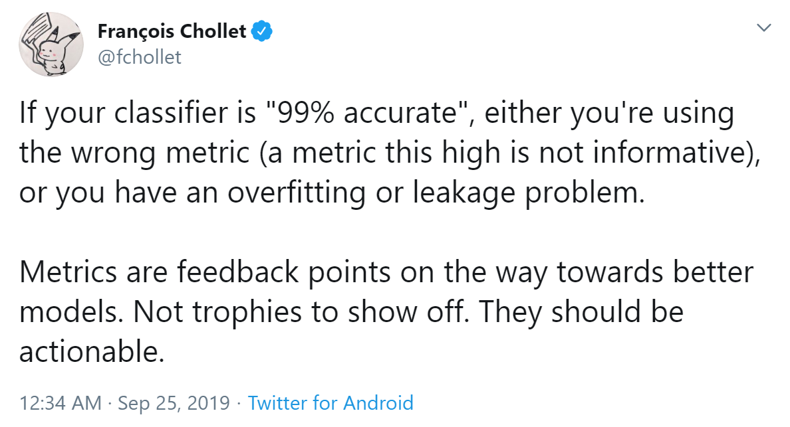
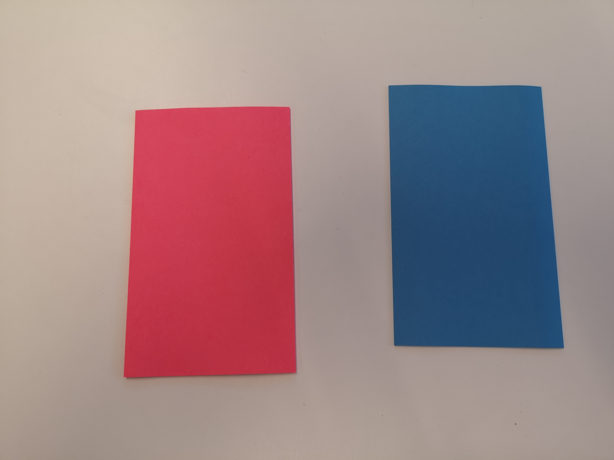

## Workshop \#2 ### Introduction to Neural Networks with TensorFlow #### and ### Working on real projects These slides: http://bit.ly/workshop-ml2-nve
## Practical Advice from Olli * Accuracy should be actionable * Overfit on a small subset * Have clear input and output * Could a human learn from that data? * Train/Test Split * Fighting overfitting * Is your model large enough? * Start small and humble * Make incremental changes to something that works in some way * Use a baseline so you know what is possible * Once you have anything working, save it as a copy <!-- After production: * You are never done * Going into production is not the end of the story * Don't let your model go stale -->
### Words from François Chollet  <small> https://twitter.com/fchollet/status/1176625911036145666 </small>
## Practical advice from a master of his craft _Challenges of training neural nets_ 1. Neural net training is a leaky abstraction - you need to understand what is going on 1. Neural net training fails silently - the possible error surface is large _The recipe_ 1. Understand your data 1. Make one simple experiment after the other 1. Make your model good / large enough to overfit on a batch 1. Regularize on full data set 1. Tune and scrape the barrel <small> https://karpathy.github.io/2019/04/25/recipe/ </small>
### Overview of Notebooks _Classic_ * Regression: https://colab.research.google.com/github/djcordhose/ml-workshop/blob/master/notebooks/classic/regression.ipynb * Classification: https://colab.research.google.com/github/djcordhose/ml-workshop/blob/master/notebooks/classic/strategies.ipynb * Clustering: https://colab.research.google.com/github/DJCordhose/ml-workshop/blob/master/notebooks/unsupervised/cluster-insurance.ipynb <!-- * Dimensionality Reduction: https://colab.research.google.com/github/DJCordhose/ml-workshop/blob/master/notebooks/unsupervised/pca-insurance.ipynb --> _Neural Networks_ * Regression: https://colab.research.google.com/github/DJCordhose/ml-workshop/blob/master/notebooks/tf2/tf-low-level.ipynb * Classification: https://colab.research.google.com/github/DJCordhose/ml-workshop/blob/master/notebooks/tf2/tf-low-level-classifier.ipynb * Dense / Tabular data: https://colab.research.google.com/github/djcordhose/ml-workshop/blob/master/notebooks/tf2/tf-dense-insurance-final.ipynb * Convolutional / Images: https://colab.research.google.com/github/DJCordhose/ml-workshop/blob/master/notebooks/tf2/images-intro.ipynb * RNN / Sequences: https://colab.research.google.com/github/DJCordhose/ml-workshop/blob/master/notebooks/tf2/seq-basics.ipynb * RNN / Sequences Advanced: https://colab.research.google.com/github/DJCordhose/ml-workshop/blob/master/notebooks/tf2/seq-advanced.ipynb * Analyses of the data: https://colab.research.google.com/github/DJCordhose/ml-workshop/blob/master/notebooks/tf2/time-series-analyses.ipynb <!-- * Classic Machine Learning: https://colab.research.google.com/github/DJCordhose/ml-workshop/blob/master/notebooks/tf2/time-series-classic.ipynb --> <!-- * RNNs: https://colab.research.google.com/github/DJCordhose/ml-workshop/blob/master/notebooks/tf2/time-series-rnn.ipynb --> * RNNs: https://colab.research.google.com/github/DJCordhose/ml-workshop/blob/master/notebooks/tf2/time-series-rnn-full-predict.ipynb * Multi-Step Encoder/Decoder: https://colab.research.google.com/github/DJCordhose/ml-workshop/blob/master/notebooks/tf2/time-series-encoder-decoder.ipynb
## Scratchpad to share links and information On Google Drive, everyone with link can read and edit http://bit.ly/nve-scratch <!-- https://docs.google.com/document/d/12S40uiNrLXdR_K3yrKjD0e0bXs9WsVkLUh0PKhcMYnI/edit -->
## Post Its  * Stick the red one to your laptop to indicate you need help (please remove after you have been helped) * Do the same with the blue one to indicate you are done with an exercise (please remove at the beginning of each exercise)
### You should have * A use case * Data for your use case * Have the data loaded into a notebook * Have the data in a format accessible to TensorFlow or to any other library you want to use
### Notebooks for Preparation Image Recognition * Skeleton for Image data: https://colab.research.google.com/github/DJCordhose/ml-workshop/blob/master/notebooks/tf2/images-skeleton.ipynb Time Series * Skeleton for Time Series data: https://colab.research.google.com/github/DJCordhose/ml-workshop/blob/master/notebooks/tf2/time-series-skeleton.ipynb
### Plan for this week * Day 1 (Wednesday, September 25th, 9:00 - 12:00, 13:00 - 16:00): Neural Network Basics` * Morning lecture I (1-2 hour): https://colab.research.google.com/github/DJCordhose/ml-workshop/blob/master/notebooks/tf2/tf-low-level.ipynb * Optional Morning lecture Ib (1 hour): https://colab.research.google.com/github/DJCordhose/ml-workshop/blob/master/notebooks/tf2/tf-low-level-classifier.ipynb * Morning lecture II (1-2 hour): <a href='2019-dense.html'>Basics of Dense Neural Networks</a> * Afternoon * Status NVE projects * Work on projects * Day 2 (Thursday, September 26th, 9:00 - 12:00, 13:00 - 16:00): Images * Morning lecture (1-2 hours): <a href='https://colab.research.google.com/github/DJCordhose/ml-workshop/blob/master/notebooks/tf2/images-intro.ipynb'>Introduction to Image Recognition</a> * Afternoon: Work on projects * Day 3 (Friday, September 27th, 9:00 - 12:00, 13:00 - 16:00): Sequences, Time Series * Morning lecture (1-2 hours): <a href='2019-rnn.html'>Introduction to Sequences and Time Series</a> * Afternoon * Work on projects * Presentation of results * Next steps
### Plan for Friday * ~ 9:00 - 10:30 Time Series Data Introduction * ~ 10:30 - 11:00 Break and preparation of short Presentation * share your notebook to avoid switching machines if possible * either in http://bit.ly/nve-scratch * or with Olli * ~ 11:00 - 11:30 Presentations * 11:30 - 12:30 Lunch Break * 12:30 - 16:00 Optionally more work on projects
### Status NVE projects _Guideline_ * Overall status of the project * What is the favored Machine Learning approach? * Can you show results? * What are your next steps? * Where can other people help you?